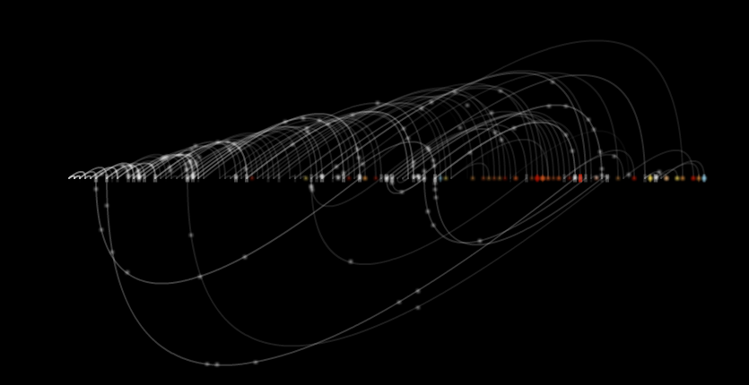
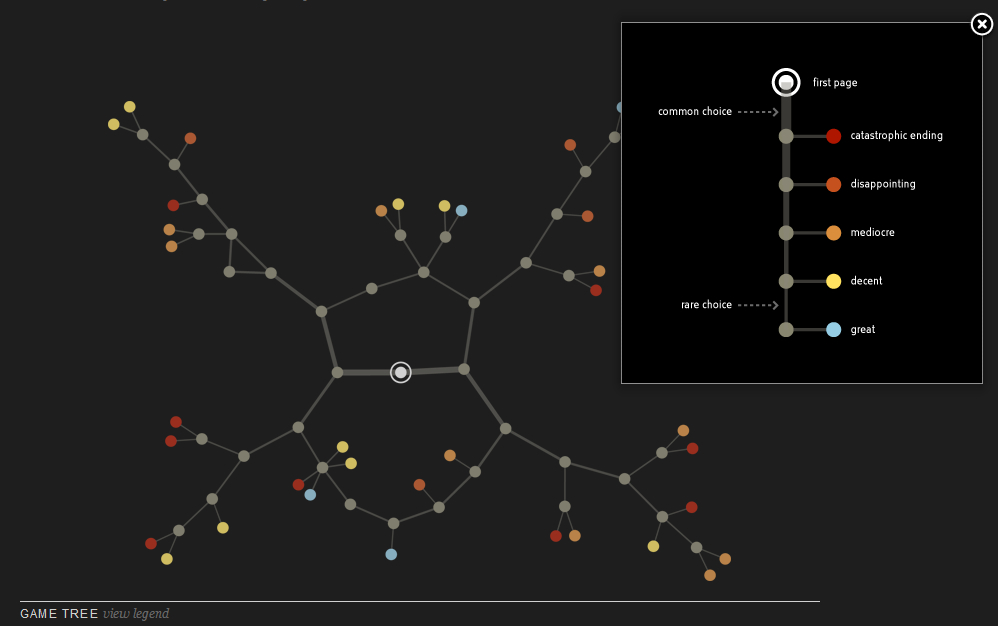
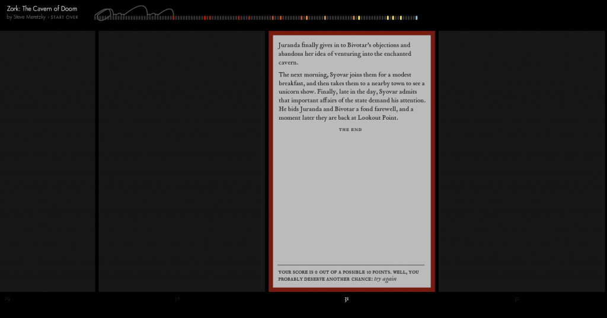

Christian Swinehart has quietly produced a beautiful and digitally rich exploration of choose your own adventure (cyoa) books that should serve as a model for the production of digital scholarly media. He begins with a small corpus, only twelve books–a decision that reinforces one of my main takeaways from last month’s Digital Humanities conference: we may have access to millions of books and millions of GIS datapoints (what Matt Jockers has referred to as “an embarrassment of data”) but the best work is going to be done on a careful subsection of that data, and not as one giant aggregate. Demonstrating further sensible behavior, Swinehart also makes clear the method he uses to translate each book into a graph:
At its atomic level, a cyoa book is a collection of numbered pages of a few different types. Most pages tell a portion of the story, then finish by telling you to jump to another page. A smaller number of pages tell a conclusion to the story and represent an endpoint with no further jumps. We can subdivide these ‘narrative’ and ‘endings’ groups further based on the number of choices offered or the goodness of the ending.

He then does what every Digital Humanities paper does and provides a lucid narrative explanation of his examination of CYOA books as a database of “places and situations” while repurposing concepts such that books are amenable to “random access” and that genre fiction’s appeal has to do with its highly portable logic. Like many DH papers, liberal use of diagrams support and illustrate Swinehart’s argument (though his background as a trained designer and skilled programmer mean these diagrams are even more compelling as art in themselves) and in this way he notes the structural features of CYOA books (bad endings first, along with a sort of reconqista of linear narrative) and their similarities to early text adventure games. It ends with an amazing close reading focused on the hidden story of Ultima from Inside UFO 54-40, which is simultaneously presented as a disconnected component of the UFO 54-40‘s graph. The hidden story (or disconnected component) is itself a chimera, only four pages long with two of those pages spent displaying an idyllic drawing of the hidden world and two pages filled by text pregnant with subversive meaning.

And if that narrative were all there was, then this would be an excellent paper, laudable in any DH journal (naturally, it lacks obeisance paid to the scholarly community–a liberal sprinkling of Manoviches, Montforts and Druckers should easily fix that) but it goes far beyond expressing the argument in narrative with static images. Swinehart provides animated “readings” of each book, which demonstrate the recursive nature of the works. He also offers each work as a gallery of visualizations both data-driven and hand-drawn. Finally, he provides an entire work, Zork: The Cavern of Doom, as an interactive piece, with your travel through the structure of story-as-database visualized dynamically with every choice.
Swinehart’s work, along with his numerous, visually striking earlier explorations, should serve as a guide to DH scholars dissatisfied with the presentation of their scholarship in traditional, linear narrative form. If we wish to move beyond the stale narrative-and-static-image presentation of knowledge that so dominates peer-reviewed scholarship today, then we will need to take take a lesson from mythical Ultima, hidden away between pages, a place that you cannot arrive at “by following directions.”